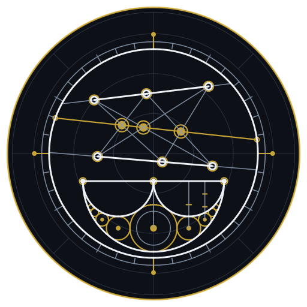

Pappus of Alexandria¶

The works of Pappus of Alexandria (fl. c. 320–340 CE) preserved the Hellenistic Treasury of Analysis and the foundational incidence theorems of projective geometry in his eight-book Synagoge. Within the interconnected GEOMETOR semantic digital archive, these classical treatises and constructive projective theorems are liberated from static print bounds into addressable semantic units, calibrated vector diagrams, primary-source folio provenance, and exact symbolic models speaking one shared geometric language.

Mathematical Collection
Pappus’s late-antique Alexandrian compendium synthesizing the Greek Treasury of Analysis, projective cross-ratio and hexagon lemmas, semicircle means, arbelos circle chains, and architectonic mechanics.
Usage
This archive is built with PHOTON Publish as an interconnected semantic book codex.
Theorems
Structured symbolic explorations tracing Pappus’s fourth-century Alexandrian Synagoge across both its projective incidence canon (cross-ratios, complete-quadrilateral harmonic conjugates, Pappus’s Hexagon, Jakob Steiner’s six-line configuration, and Golden Ratio perspectivities) and its classical Books III, IV, V, and VIII constructions (semicircle means, parallelogram areas, arbelos circle chains, and honeycomb isoperimetry).
Changelog
Rebuilt codex documentation with photon-platform/publish v0.4.6 so every inline .euclid-graphic SVG carries explicit viewBox pixel dimensions, per-diagram scoped <style> rules, and Nocturnal Codex dark/light theme parity.
About
geometor.pappus establishes a definitive Digital Scriptorium edition and symbolic computational synthesis of Pappus of Alexandria’s (c. 340 CE) Synagoge (Μαθηματικὴ Συναγωγή, Mathematical Collection). Compiled during the twilight of ancient Greek geometry, the Synagoge constitutes the primary surviving compendium of classical Hellenistic mathematics. Across eight books, Pappus preserved the methods of lost masterpieces by Euclid, Apollonius, and Aristaeus, while advancing groundbreaking discoveries in solid and linear loci, isoperimetric optimization, and mechanical synthesis.
References
Hultsch, Friedrich (ed., 1876–1878). Pappi Alexandrini Collectionis quae supersunt e libris manu scriptis edidit Latina interpretatione et commentariis instruxit Fridericus Hultsch (3 vols.). Berlin: Weidmann. (Vol. I, 1876: Books II–V; Vol. II, 1877: Books VI–VII; Vol. III, 1878: Book VIII & Index Graecitatis. Authoritative public-domain Greek witness for this Codex.)
Demos
Nine standalone runnable scripts in demos/ showcase every layer of geometor.pappus—spanning
both the projective Pappus–Steiner–Pascal canon and Books III, IV, V, and VIII of the Synagoge—with
formatted Rich terminal tables and 100% exact SymPy coordinates.
Log
Chronological research and development log for geometor.pappus.
Modules
Pappus of Alexandria’s Synagoge (Mathematical Collection) and symbolic projective geometry.